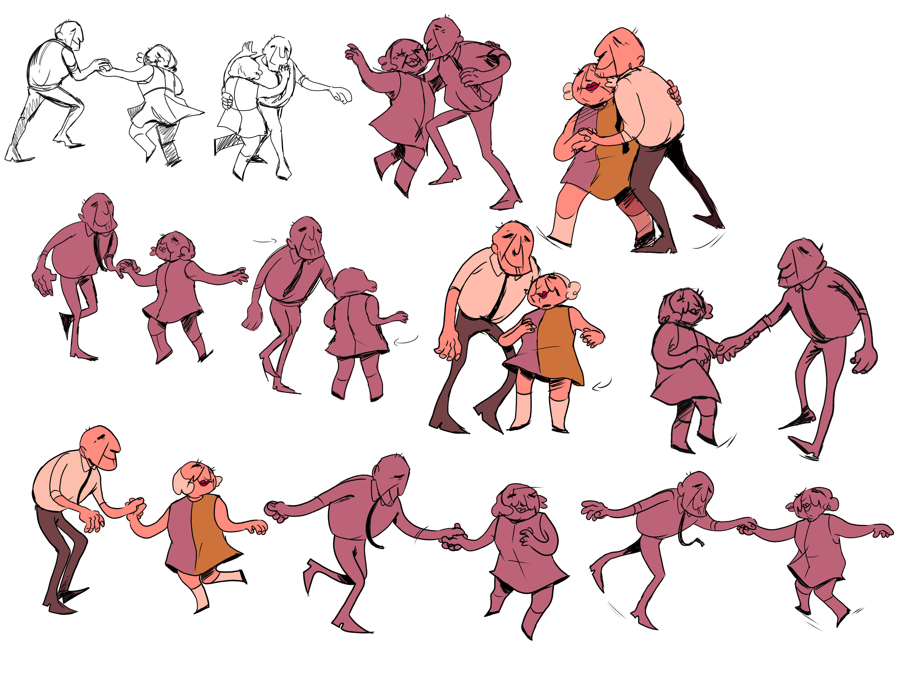

Fly is a 2022 Ultrakort written and directed by Patty Strenger, produced bySpotted Bird, with art direction and lead animation by Mackenzie Fincham. For this short I worked as an assistant animator, and provided the rough animation for most of the scenes. I also helped with clean-up and colouring where necessary.
